言筑是一个把 LLM 的结构化输出装配成可交互界面的生成器：它把「生成」拆成五步并实时展示， 把「场景」做成服务端强制的约束，把「安全」做成确定性的边界注入。 这份文档说明它为什么这样设计、如何验证，以及边界在哪里。
言筑是一个人格页面生成器：用户给出几个标签和一段描述，工程师 AI 把它扩写成一份结构化 spec JSON（人设提示词 + 骨架 id + 主题 token + 界面文案），前端据此装配出一套完整可交互的人格聊天页；此后人格 AI 以 SSE 流式驱动对话。
生成过程不是一次黑盒调用，而是一条可见的五步 Agent 链路：检索 → 规划 → 生成 → 校验 → 兜底。每一步调用的工具、参数、检索证据与护栏判定，都通过 SSE 实时推到页面。用户可以看着自己的页面被"施工"出来。
AI 应用在 2025—2026 年的主流形态，仍然是把模型能力塞进一个固定的聊天框：侧边栏选角色，中间气泡对话，右侧可能挂一个文档面板。产品差异被压缩到"角色提示词写得好不好"这一层，界面本身是常量。
但用户对"陪伴"这类需求的真实期待，往往包含空间感：有人想要手账的私密与缓慢，有人想要终端窗口的干净利落，有人想要电台夜话的氛围。同一句"我有点累"，在三种界面里的感受完全不同。界面是语义的一部分，不是包装。
言筑让 LLM 产出的不是一句话，而是一份可校验的结构化规格。这份规格里没有任何代码——只有一个受约束的 skeleton_id、一套主题 token、一段人设提示词和若干界面文案。前端拿到规格后，用预置的骨架把它装配成一个真实可用的页面。
这条设计有一个关键的工程后果：AI 的自由度被限制在"选择与填充"，而不是"发明"。骨架是人工设计的 16 套，主题 token 有明暗成套约束，文案有长度与禁区校验。因此产出稳定、可预期、不会生成半截坏页面——这是把生成式能力做成产品的前提。
| 做法 | 典型形态 | 局限 | 言筑的选择 |
|---|---|---|---|
| 提示词市场 | 选一个角色，复制提示词进通用客户端 | 界面完全不参与表达 | 界面即产物，每个角色有自己的骨架与配色 |
| AI 建站工具 | 生成整页 HTML/React 代码 | 结构不可控、样式易崩、难以校验 | LLM 只产 JSON，禁止产代码；骨架预置 |
| 固定聊天套壳 | 多角色共用一个对话框皮肤 | 人格差异只剩气泡文案 | 16 套骨架承载不同的空间隐喻 |
很多生成式产品死在"第二次打开"上：用户辛苦生成的东西，被产品自己的首页、引导、功能介绍埋在下面。言筑的做法是——言筑自己的页面只出现一次。用户第一次把限定词交给 AI 之后，生成出的人格页就是他的网站；此后每次登录，直接落在自己搭好的页面上。
| 账号状态 | 落点 | 说明 |
|---|---|---|
| 已有主页面 | /chat/:id | 直接进入自己的站点，不经过任何引导页 |
| 已选场景、还没有人格 | /start 开站页 | 品牌 + 三句话 +「开始搭建」，是唯一的"空地"状态 |
| 还没选场景 | /scene | 先完成账号级场景选择，再回开站页 |
主页面记录在 users.primary_persona_id，生成第一个页面时自动设为落点；人格库卡片名字旁的星标可随时改（不调 LLM、不耗生成配额）。删除主页面会自动顺延到剩余最早的人格，换场景归档后清空落点——任何一条路径都不会把用户扔回引导页。
站点交付后仍可就地改造：右下角悬浮球是装修台，既切语气也提供 AI 装修师——用自然语言描述视觉，服务端产出主题 token 候选，经对比度护栏校验后先预览、点「采用」才落库；点头像可隐藏或上传自定义图片；「沉浸」按钮收起外壳，平台落款移到页脚。聊天区上方的多轮会话以可关闭标签管理，消息区内部滚动，聊天框高度固定。
/build 五步实时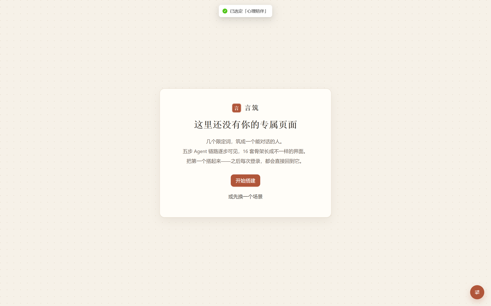
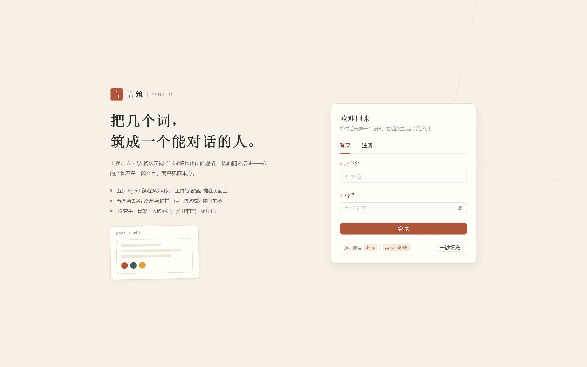
下面每一项都可以在仓库里指到具体文件，也可以在产品里点到具体入口。我们尽量避免"用了 RAG"这类无法验证的表述，而是给出可现场复现的验证路径。
| 评分项 | 权重 | 本作品落点 | 可验证入口 |
|---|---|---|---|
| LLM | 8 | 双模型分工：工程师模型产出结构化 spec JSON（质量优先），人格模型驱动实时对话（首 token 优先）。模型只产数据不产代码，输出经 Pydantic schema 校验后才可装配。 | POST /api/personasPOST /api/agent/build16 套骨架画廊 |
| Agent | 8 | 五步显式编排 retrieve → plan → generate → validate → fallback；每步的工具调用、参数与结论通过 SSE 推送；规划优先 LLM，超时 12 秒降级确定性规则。 | /build 页面时间线工具调用面板 规划决策面板 |
| RAG | 6 | 42 条人工整理语料按 4 个场景分库（care 18 / study 8 / workplace 8 / relation 8）；中文单字 + bigram 的 BM25-lite；只在本场景索引内检索；口语危机表达做查询改写；命中证据注入提示词。 | GET /api/meta/knowledge?q=…&preset_id=care时间线「检索证据」面板 |
| 多模态 | 5 | 文本语义到视觉的最小闭环：标签与描述决定骨架选择、主题 token（五色 + 字体 + 装饰）与界面文案，产出的是可交互界面而非图片。 | 同一段描述换标签 → 骨架与配色改变 |
| AI 安全 | 4 | 危机识别、医疗越界、否定感受措辞、场景专属红线、PII 脱敏；按场景分级 strict / normal / loose；有否定语境豁免；安全边界确定性写入 system_prompt；越界转确定性兜底并标记待复核。 |
把描述改成危机表达 → 护栏给出求助资源 |
| MCP | 4 | 7 个工具以 name / description / inputSchema 三件套注册，统一 call_tool 调度；工具清单对外可查，Agent 不硬编码工具名。 |
GET /api/meta/tools |
| 维度 | 工程师 AI（生成） | 人格 AI（聊天） |
|---|---|---|
| 调用频次 | 低频：一个账号一天个位数 | 高频：一次对话数十轮 |
| 延迟容忍 | 高：实测 30–38 秒可接受，因为过程可见 | 低：首 token 约 2 秒，超过 3 秒用户就走神 |
| 失败代价 | 高：页面错了要重来 | 低：重发一句即可 |
| 选型 | 强模型（deepseek-v4-pro） | 轻量模型（deepseek-flash） |
| 降级 | 校验失败 → 确定性兜底 spec + 待复核 | 无密钥 → MockAdapter，链路与 UI 照常可跑 |
换句话说：把延迟预算花在用户看得见的地方。生成慢但有五步直播，用户是在"看施工"；聊天慢则是纯粹的空转。
工程师 AI 的输出被 Pydantic 模型严格约束。任何字段越界（骨架 id 不在目录里、提示词过短、文案超长）都会在校验步骤被打回，转入兜底而不是把坏数据写进库。
{
"name": "苏桃",
"system_prompt": "你是苏桃，一个……（20–1500 字，含场景边界与禁区）",
"skeleton_id": "diary", // 必须在 16 套目录内
"theme": { // 五色 + 字体 + 装饰，明暗成套
"primary": "#b0563a", "bg": "#fbf6ec", "fg": "#3a322a",
"accent": "#8b9d83", "muted": "#b9ab96",
"font": "serif", "decor": "tape"
},
"page_copy": { "title": "…", "subtitle": "…", "placeholder": "…", "…": "…" },
"opening_message": "……你好……我是苏桃……请，请多关照……"
}
我们做过对照：让模型直接产出 React 组件，能得到"看起来对"的页面，但存在三类不可控——结构漂移（同一提示词两次产出不同的 DOM 层级）、样式塌陷（深色骨架配浅色文字）、以及无法校验（没有 schema 可依）。对一个要在评委面前现场演示的产品，这三类问题都是致命的。
改成"选骨架 + 填 token"之后，模型的能力被用在真正需要它的地方：理解标签之间的语义张力，把矛盾的人格描述调和成一段自洽的提示词，并为这套人格选一个视觉隐喻。这些恰是规则写不出来的部分。
| 轴 | 成员 | 设计意图 |
|---|---|---|
| 社交向 | 内向 / 外向 | 四条轴覆盖了原本九组两两冲突。新标签挂到轴上自动生效，不必维护组合表。 |
| 判断式 | 理性 / 感性 | |
| 能量 | 活泼 / 安静 / 沉稳 / 冷淡 | |
| 分寸 | 严肃 / 俏皮 / 撒娇 |
「关系定位」不进轴，用配额（最多 1 个）约束——因为"青梅竹马 + 同桌"这类组合需要额外说明，应该被配额挡住而不是被写死在规则里。对于"毒舌 + 温柔"这类反差张力，我们不禁止，只在描述为空时提醒一句：写清什么时候会软下来就行。
data/tagGroups.js 与后端校验里各有一份。我们用 tag_test.py 以正则解析前端 JS 常量，与后端规则逐条比对，锁死两份配置不会漂移——这条测试目前 33/33。
这是本作品技术叙事的主干。它解决一个具体问题：生成式产品的中间过程通常是黑盒，用户只看到 loading。言筑把这条链路拆成五个可观测步骤，每步都有明确的输入、工具、失败语义与 SSE 事件。
| 步骤 | 工具 | 职责与判定 | 失败语义 |
|---|---|---|---|
| ① 检索 | retrieve_scene_knowledge |
在当前场景的语料索引里做 BM25-lite 检索；同时扫描输入护栏。返回带分数与场景标记的证据条目。 | 无命中 → 空证据，不阻断 |
| ② 规划 | plan_generationpick_skeleton |
依据场景、证据与护栏报告，决定语气策略、骨架倾向与安全策略。优先由 LLM 决策；超时 12 秒或失败则降级为确定性规则（按标签与场景查表）。 | LLM 失败 → 规则规划，标记来源 plan_source=rule |
| ③ 生成 | generate_spec |
调用工程师 LLM 产出结构化 spec JSON。LLM 只产数据，不产代码。 | 解析失败 → 进入兜底 |
| ④ 校验 | validate_spec |
按 SpecModel 校验结构；扫描医疗越界、否定感受措辞；把安全边界确定性注入 system_prompt（这部分不交给模型自由发挥）。 | 越界 → 进入兜底并标记待复核 |
| ⑤ 兜底 | fallback_spec |
构造确定性 spec（场景默认骨架 + 安全提示词），保证链路永不空手而归；人格状态置 needs_review，页面上给出「待重生成」标记。 |
兜底本身不失败 |
后端以 text/event-stream 逐步推送：step（步骤状态变化）、tool（工具名、入参摘要、耗时、结论）、evidence（检索命中的证据 id 与标题）、guard（护栏判定与是否注入边界）、plan（规划结论与来源）、done / error。前端 AgentTimeline 消费这些事件，实时点亮步骤、追加工具卡片。
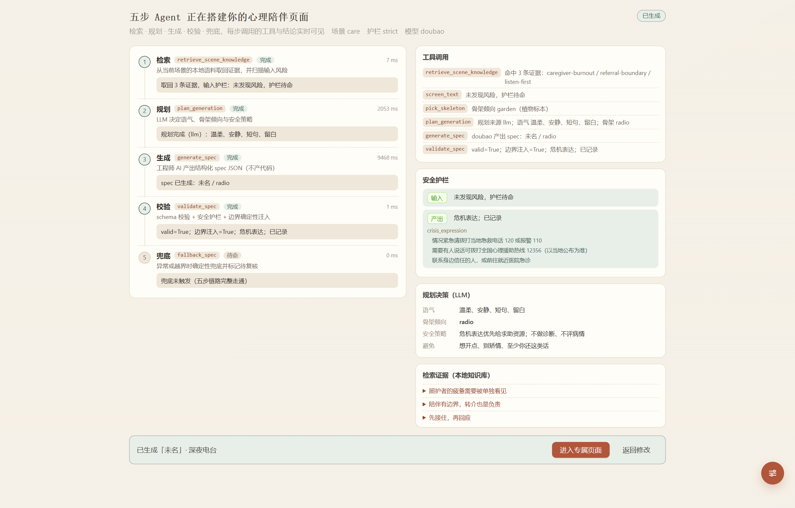
/build 页面（真实模型）：顶栏标注 模型 doubao；左列为五步状态与每步耗时（③生成占绝大部分），右列为工具调用、安全护栏、规划决策与检索证据| 界面区域 | 这张图里能验证什么 |
|---|---|
| 五步状态列 | 检索 7ms / 规划 2053ms / 生成 9468ms / 校验 1ms / 兜底未触发，合计约 11.5 秒——③生成是唯一耗时大头，其余四步近乎瞬时 |
| 工具调用 | 7 个工具依次出现，每个带结论摘要：检索命中 3 条证据、护栏未发现风险、骨架倾向 radio、validate_spec 回 valid=true |
| 安全护栏 | 输入「未发现风险，护栏待命」；输出侧「危机表达：已记录」——护栏不阻断用户说话，只约束我们生成的内容，并在识别到危机表达时注入求助资源 |
| 规划决策 | 语气「温柔、安静、树洞、留白」、骨架倾向 radio、安全策略「不做诊断、不收集隐私」、避免「想开点 / 别矫情 / 至少你还」 |
| 检索证据 | 三条命中条目的标题（照护者疲惫 / 反弹边界 / 先接住），可点开看原文——这是场景语料 RAG 在做事的直接证据 |
doubao 适配器，生成用 deepseek-v4-1-flash、对话用 economy 档），五步全程实跑。项目同时保留降级能力：两组密钥留空时自动走 MockAdapter，链路与界面仍可完整跑通，方便评审在无网络、无密钥环境下验收——这不是伪装，而是刻意保留的离线演示路径。
| 场景 | 条目 | 语料主题 |
|---|---|---|
| 心理陪伴 care | 18 | 情绪倾听、照护者疲惫与内疚、危机表达应对、避免毒性积极 |
| 学习搭子 study | 8 | 拖延拆解、番茄节奏、复盘方法、考试焦虑 |
| 职场沟通 workplace | 8 | 拒绝加班三段式、向上反馈、冲突对齐事实、边界表达 |
| 亲密关系 relation | 8 | 需求表达、冲突降温、修复性对话 |
| 自由创作 free | 0 | 对照组：不注入任何场景语料，等价于改造前的自由生成路径 |
| 合计 | 42 | 检索器：bm25-lite / 中文 unigram+bigram / 每场景独立索引 |
同一句「领导让我加班到十一点，我想拒绝」，在三个场景下的返回完全不同。下面是对 GET /api/meta/knowledge 的真实调用结果（2026-11-16 实测）：
| 场景 | 得分 | 证据所属 | 命中标题 |
|---|---|---|---|
preset_id=care | 21.01 | care | 照护者的内疚不是错 |
| 20.83 | care | 不评判、不比较 | |
preset_id=workplace | 31.89 | workplace | 拒绝加班用三段式，不用道歉开场 |
| 27.28 | workplace | 向上反馈只讲事实与影响 | |
preset_id=free | 30.76 | workplace | 拒绝加班用三段式，不用道歉开场 |
| 13.31 | care | 避开「想开点」式的毒性积极 |
care 场景下不会出现职场条目，反之亦然；free 是全局检索的对照基线。这条隔离不是靠提示词"请只使用…"实现的，而是物理上的索引隔离——检索函数只拿到本场景的倒排表。
真实用户的求助表达往往不含术语。「不想活了」「撑不下去了」「没意义了」这类句子，直接检索 BM25 几乎命不中资源条目。我们在检索前做一次轻量改写：把口语危机表达映射到语料里的规范表述（如"危机表达 / 求助资源"），再取并集检索。这条改写规则是确定性的，不经模型，避免"改写也失灵"的二次故障。
护栏要解决的不是"拦截用户"，而是"约束我们生成的内容"。用户说"我不想活了"，产品绝不能因此拒绝服务或锁死输入——那是最糟的体验。正确做法是：照常接住情绪，同时把求助资源递过去。
| 类别 | 判定内容 | 处置 |
|---|---|---|
| 危机表达 | 自伤 / 自杀 / 极端绝望的口语与书面表达 | 注入 3 条求助资源 + 明确"不替代专业帮助"，回到陪伴语气 |
| 医疗越界 | 诊断、用药、剂量、病情评估 | 拦截该段生成内容，改为"建议就医"的边界表述 |
| 否定感受措辞 | 「想开点」「别矫情」「至少你还…」 | 写入 system_prompt 禁区 + 生成后扫描 |
| 场景专属红线 | 职场场景的 PUA 话术、亲密关系场景的控制性语言 | 场景级追加禁区 |
| PII | 手机号、身份证、详细住址 | 脱敏后再进入提示词与日志 |
| 级别 | 场景 | 策略差异 |
|---|---|---|
| strict | 心理陪伴、亲密关系 | 危机与医疗双向扫描；边界段落逐字注入；越界即转兜底 |
| normal | 学习搭子、职场沟通 | 危机扫描保留，医疗越界按需；禁区以提示词为主 |
| loose | 自由创作 | 仅保留通用危机兜底，作为对照基线 |
禁用语扫描有个天然的假阳性：用户在跟 AI 讨论这些话本身时，也会命中规则。比如用户写「我不需要别人跟我说想开点」，或产物提示词里写「不要说想开点、别矫情」。如果直接判定违规，产物会被无谓打回。
实现上是否定语境窗口：命中禁用词时回看固定窗口内的否定词（不、别、不要、无需、避免、禁止…）与引用标记（「」、""、"说…这类话"）。若处于否定或引用语境，则不判违规，但仍记录到报告里供人工复核。这条规则让护栏从"能拦住"进化到"不乱拦"，agent_test.py 里为此单独写了用例。
安全边界不交给模型自由发挥。校验步骤会把场景级边界段落原文追加到 system_prompt 末尾，并标注这是系统注入而非人设的一部分。这样即便模型在生成时"忘了"，最终提示词里也一定带着边界。
Agent 的每一步不是硬编码的函数调用，而是通过工具注册表调度。每个工具都以 MCP 风格三件套声明：name / description / inputSchema。好处有两个：Agent 编排代码不依赖具体实现，工具可独立测试；对外可查，评审能看清"每一步到底调了什么"。
| 工具名 | 所属步骤 | 职责 |
|---|---|---|
retrieve_scene_knowledge | ① 检索 | 在当前场景的本地语料里做 BM25-lite 检索，返回带分数与场景标记的证据条目，用于约束生成边界。 |
screen_text | ① / ④ | 扫描文本的危机表达、医疗越界、否定感受措辞、场景专属红线与可识别信息，返回护栏报告与求助资源。 |
pick_skeleton | ② 规划 | 按标签与场景，从 16 套骨架目录里挑视觉隐喻最贴切的一套，供规划步骤参考。 |
plan_generation | ② 规划 | 依据场景、证据与护栏报告，规划语气、骨架倾向与安全策略。优先 LLM 决策，失败降级确定性规则。 |
generate_spec | ③ 生成 | 调用工程师 LLM 产出结构化 spec JSON（人设 + 骨架 + 主题 + 文案），只产数据不产代码。 |
validate_spec | ④ 校验 | 按 SpecModel 校验结构，扫描医疗越界与否定感受措辞，并把安全边界确定性注入 system_prompt。 |
fallback_spec | ⑤ 兜底 | 生成失败或校验越界时，构造确定性兜底 spec 并标记 needs_review，保证链路永不空手而归。 |
call_tool(name, **params) 进入，参数按各自 inputSchema 校验；未知工具名直接报错，不做静默降级。tool 事件的数据源与排障日志。GET /api/meta/tools 返回全部 name / description / inputSchema，评审可直接对照界面上的调用记录。当前实现是MCP 风格的本地工具注册表，不是接入外部 MCP Server 的客户端。我们没有宣称"支持 MCP 协议"，而是采用了 MCP 的契约形状：工具自描述、参数用 JSON Schema、统一调度入口。这样后续要换成真正的 MCP Server（把工具暴露给外部编排器）时，只需替换调度层的传输方式，工具定义不用改。
我们不把"多模态"理解成必须生成图片。这里的跨模态是：自然语言里的性格与氛围描述，被翻译成一整套视觉参数——骨架（空间结构）、色彩（情绪基调）、字体（语速）、装饰（质感）。产物不是一张图，是一个能用的界面。
| 语义输入 | 中间表示 | 视觉产出 |
|---|---|---|
| 「温柔 / 安静 / 树洞」 | 语气策略：短句、留白、不追问 | 夜间电台或植物标本类骨架，低饱和暖色，衬线字 |
| 「理性 / 沉稳 / 前辈」 | 语气策略：先结论后解释、少寒暄 | 终端或档案卷宗类骨架，等宽字，冷调高对比 |
| 「活泼 / 俏皮 / 同桌」 | 语气策略：短句 + 语气词、可用表情 | 便签或黑板类骨架，圆角、亮色块 |
| 「傲娇 / 毒舌 / 管家」 | 语气策略：口是心非、克制示好 | 收据或书信类骨架，纸感、印章、手写装饰 |
| 明色系（9） | 手账书信 diary · 信笺 letter · 诊所 clinic · 收据 receipt · 图书馆 library · 药水铺 potion · 花园 garden · 教室 classroom · 论坛 bbs |
|---|---|
| 深色系（7） | 极简 minimal · 电台 radio · 终端 terminal · 塔罗 oracle · 星舰 starship · 霓虹 neon · 侦探卷宗 casefile |
每套骨架都是手工设计的独立组件，不是同一模板换皮：它们的消息区结构、输入区形态、装饰元素、字体族都不同。深色骨架上还会成套切换 antd 组件的按钮与占位符样式——这是最容易露馅的地方，我们在启动期用断言锁住"七套深底骨架必须带深色主题"，避免出现黑底黑字。
如果让模型生成布局，我们无法保证响应式、无法保证可访问性、也无法保证深色下的对比度。把自由度限制在"选一套 + 填主题"，换来的是：每一套骨架都被人工调过移动端断点，每一套配色都经过对比度检查，产物永远是可交付的页面。这是产品化与"能生成"之间的分界线。
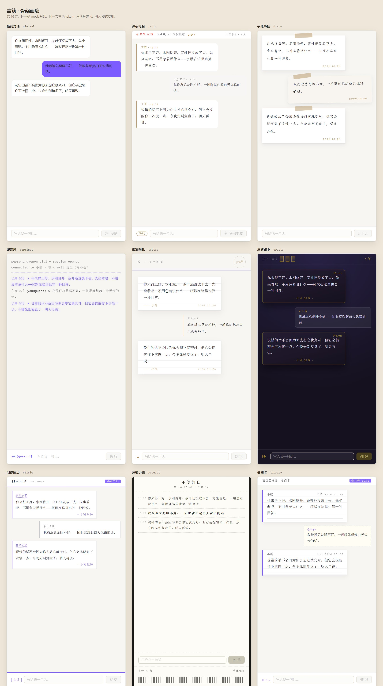
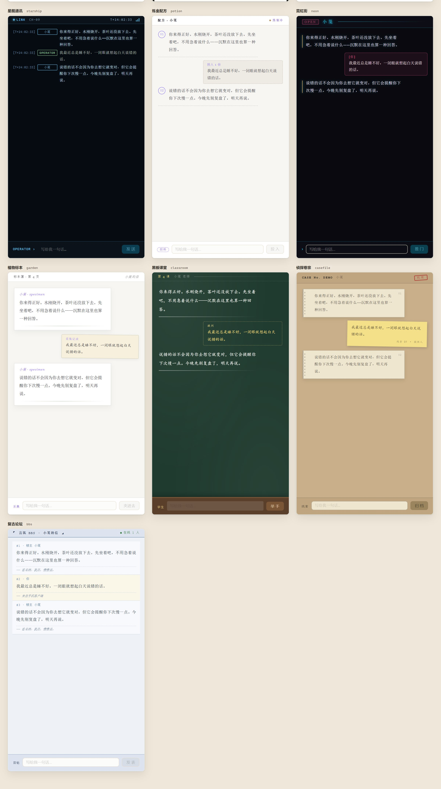
同一段示例对话在 16 套骨架里的呈现。差异不止配色，还有消息结构、输入区形态与装饰语言——如果某两套放远看分不出来，就说明其中一套的隐喻没做透，需要重做而不是调色。
| 骨架 | 空间隐喻 | 骨架 | 空间隐喻 |
|---|---|---|---|
| 极简 minimal | 留白即语气，能少一个字就少一个 | 电台 radio | 深夜频率里的独白，有杂音才真实 |
| 手账 diary | 贴在纸上的碎话，胶带与日期戳 | 终端 terminal | 一行命令一句回答，克制到冷 |
| 亲笔信 letter | 有抬头的长信，落款比正文重 | 塔罗 oracle | 抽一张牌再说话，答案要自己解 |
| 门诊 clinic | 问诊台式的克制：只问必要的 | 滚筒收据 receipt | 逐条打印的记录，一行一件事 |
| 图书馆 library | 索引卡与借阅单，知识要有出处 | 星舰 starship | 舰桥面板上的对话，冷静而远 |
| 药水铺 potion | 配方与剂量，治愈需要称量 | 霓虹 neon | 街角灯牌的暧昧，说一半留一半 |
| 花园 garden | 植物标本与节气，慢下来才看得见 | 教室 classroom | 黑板与粉笔，讲台上下有距离 |
| 卷宗 casefile | 案卷编号与线索，把话当证据 | 论坛 bbs | 楼层与引用，七嘴八舌的现场感 |
完全自由的生成会导致"什么都行、什么都不精"。场景制是产品层面的减法：账号注册后选定一个主场景，之后所有生成都受它约束——检索语料、护栏级别、默认骨架、文案语气，全部随场景走。
| 场景 | 护栏 | 定位 | 骨架倾向 |
|---|---|---|---|
| 心理陪伴 | strict | 情绪倾听 · 照护者喘息 · 不诊断不给建议 | radio / garden / diary |
| 学习搭子 | normal | 拆任务、调节奏、陪复盘，不代替学习 | library / classroom / bbs |
| 职场沟通演练 | normal | 拒绝、反馈、冲突对齐的对话预演 | terminal / receipt / casefile |
| 亲密关系沟通 | strict | 需求表达与修复性对话，不做情感裁判 | letter / potion / starship |
| 自由创作 | loose | 对照组：无场景注入的自由生成 | 由标签决定 |
/scene 外所有路由都重定向到场景页。409 SCENE_COOLDOWN 并附下次可改时间。400 SCENE_MISMATCH 拒绝。这条单独写了测试。archived（只读保留，不删除），列表折叠并通过接口回传 archived_count。悬浮工作台提供三个语气开关（如「更沉稳」「多问一句」「少说教」）。它们不改 spec、不调生成模型，而是在对话请求时把一段运行时指令追加到 system_prompt 末尾。点一下即时生效、不消耗生成配额，也不会把用户的会话记录弄丢。
同一悬浮台还承接 AI 装修师：它把自然语言诉求翻译成主题 token 候选，先预览再采用，采用前不落库、不耗配额。语气调的是"人怎么说"，装修调的是"页面长什么样"，两者都不需要重生成人格。
React 18 + Vite 5 + Antd 5 + HashRouter
前端：场景选择 / 五步时间线 / 骨架装配 / SSE 流式渲染 / 悬浮工作台 / 人格库缩略图
│ X-Yanzhu-Token (JWT) + SSE
FastAPI + SQLite WAL + PyJWT + bcrypt
后端：AI 接入层 + schema 校验 + 鉴权 + 配额 + 限流
│ OpenAI 兼容协议
Engineer LLM（深层生成） / Persona LLM（实时对话） 留空即 MockAdapter
当前接线：火山方舟 OpenAI 兼容端点（ark.cn-beijing.volces.com/api/v3）
生成 deepseek-v4-1-flash-261017 / 对话 deepseek-v4-1-flash-economy-261017
生成主链路：
brief 归一化 + 场景 enrich（场景从账号读，请求参数会被 400 拒）
→ retrieve 本地知识库 ─┐
→ screen 输入护栏 ├→ plan（LLM 优先 / 规则降级）
→ pick_skeleton ─┘ ↓
→ generate_spec（结构化 JSON，禁代码）
→ validate_spec（schema + 护栏 + 边界注入）
→ fallback_spec（越界或异常时确定性兜底 + needs_review）
→ 落库 → SSE done → 前端进入聊天
| 表 | 关键字段 | 说明 |
|---|---|---|
users | username / password_hash / primary_scene / scene_changed_at / primary_persona_id / tone_json / quota_* | 账号级：场景、落点、语气偏好、配额 |
personas | name / spec_json / skeleton_id / theme_json / status / scene_id | 站点本体：规格 + 骨架 + 主题 + 状态（active / archived / needs_review） |
conversations / messages | persona_id / role / content / created_at | 会话与消息，按人格隔离 |
llm_logs | model / latency_ms / tokens / ok | 模型调用可观测性，排障与成本核算 |
迁移采用幂等 PRAGMA 检查：启动时逐列比对，缺则 ALTER TABLE，老库可直接升级。这一设计让"新增字段"不需要额外迁移脚本，也避免我们反复重建演示库。
| 问题 | 决策 | 原因 |
|---|---|---|
| JWT 放哪 | 自定义头 X-Yanzhu-Token | 内网穿透会占用 Authorization 做 HTTP Basic，两者不能共存 |
| 前端路由 | HashRouter | 静态托管与隧道环境不需要服务端 rewrite |
| 数据库 | SQLite + WAL | 单机演示规模足够；多实例部署前需换 Postgres（已列路线图） |
| 限流分桶 | 按类别分桶（注册 / 登录 / 写入 / 生成 / 对话） | 曾因注册与登录共用 IP 队列导致误 429 |
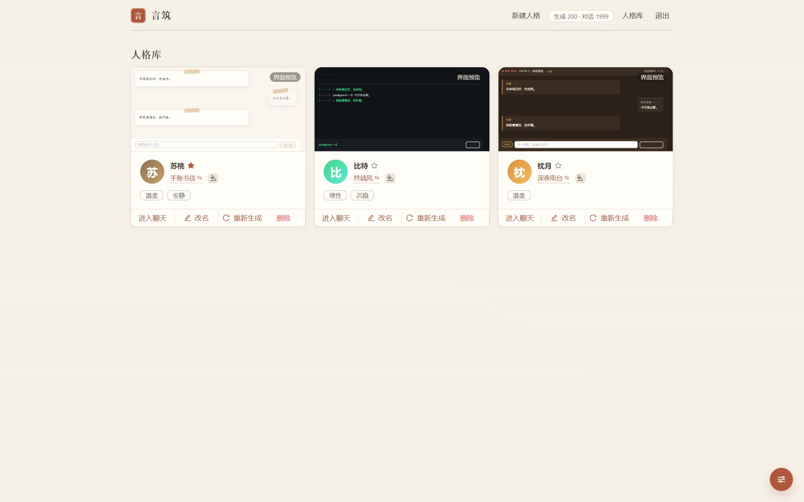
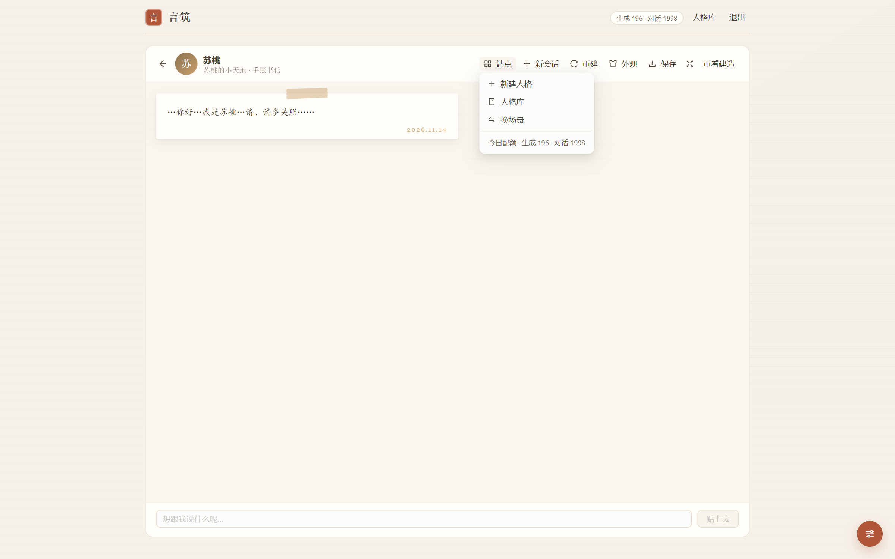
| 细节 | 设计意图 |
|---|---|
| 界面缩略图 | 列表页曾经只有一行标题，最值钱的差异（这个人的页面长什么样）完全看不见。改成实时渲染后，用户在列表页就能挑"今天想进哪个房间"。 |
| 主页面星标 | 把"登录落点"从一个隐藏在设置里的全局选项，变成每张卡片自己的属性——它本来就是"这个站点是不是我的主页"，属于卡片。 |
| 重建（覆盖 / 另建） | 覆盖模式保留人格 id、会话记录与创建时间，只换规格与视觉。用户可以"同一个人，换个活法"，而不是从零开始。 |
| 配额可见 | 生成与对话配额直接挂在站点菜单里，避免用户在第五次生成时才发现没额度。 |
| 保存与导出 | 对话可导出 Markdown / 纯文本 / JSON；页面可导出单文件 HTML（DOM 快照复用线上样式，body 底色写死，脱离 CSS 变量也能看）。 |
| 建造揭晓 | 生成完成后不是直接跳转，而是一段从线框到成品的过渡——把"它刚刚为你搭了一个房间"这件事演出来。 |
| 会话与滚动 | 多轮会话以可关闭标签并列，关闭前确认、关掉最后一个自动补建；聊天框固定高度、消息区独立滚动，长对话不再把整页拉成纸条。 |
外壳统一在一套 --yz-* token 上：米白纸底、墨色三级字阶、暖灰线、赤陶主色。它解决了一个具体问题：16 套骨架深浅不一，如果外壳永远是冷灰靛蓝，用户会觉得"我的页面被嵌在别人的网站里"。现在外壳与骨架共享同一种材质语言，页面才像"自己的"。
顺带修掉一个隐蔽 bug：App.jsx 里曾残留第二层 ConfigProvider（靛蓝主色），把外层纸感主题整个盖掉——主按钮一直是蓝色的原因就在这里。这类"主题覆盖"问题不会报错，只会让设计系统悄悄失效，值得单独记一笔。
后端验收为独立 Python 脚本（backend/*_test.py），浏览器验收为 Playwright 脚本。下表为 2026-11-15 至 11-17 的实测结果，均为连跑通过。
| 项目 | 结果 | 覆盖内容 |
|---|---|---|
冒烟 smoke_test | 14/14 | 注册、登录、生成、对话、列表、删除的主干路径 |
| 标签 / 命名 | 33 + 25 | 前后端标签轴一致性、互斥与配额、名字校验与重名 |
| 换骨架 / 配色 | 32 + 54 | 换骨架不调 LLM、不耗配额；主题成套约束；深色骨架对比度 |
场景预设与检索 presets_test scene_test | 49 + 57 | 分场景不串味、场景红线、边界注入、查询改写 |
Agent / 护栏 / MCP agent_test | 56/56 | 五步链路 SSE、工具契约、否定语境豁免、兜底分支、覆盖重建 |
场景锁定 scene_lock_test | 41/41 | 强制首选、改参数绕过被 400、冷却 409、切换归档、演示账号豁免 |
演示账号 demo_test | 14/14 | 幂等播种不重复建号、bcrypt 入库、配额档位、接口下发、错误密码 401 |
限流 ratelimit_test | 17/17 | 按类别分桶、窗口重置、prod 强制启用 |
浏览器 · 主流程 pf-e2e | 16/16 | 注册 → 选场景 → 开站页 → 弹窗 → /build 五步 → 聊天 → 刷新持久化 |
浏览器 · 重建 pf-rebuild | 11/11 | 覆盖后 persona.id 不变、名字保留、标签回填 |
浏览器 · 站点与星标 pf-star | 9/9 | 站点菜单跳转、星标往返切换、落点生效 |
| 浏览器 · 换骨架 / 深色 | 12 + 8 | 换骨架就地生效、深色骨架头部可读性 |
保存导出 pf-save | 35/35 | 六种导出格式、单文件 HTML 离线可开 |
| 前端构建 | 通过 | npm run build 无错误；16 套骨架画廊零溢出；全仓密钥扫描无真实 key |
11-17 增量：会话关闭 10/10、装修接口 16/16、标签与滚动 11/11；站点交互 81 项通过。
# 后端（8100） cd backend python -m venv .venv .venv/Scripts/python -m pip install -r requirements.txt RATE_LIMIT_DISABLED=true .venv/Scripts/python -m uvicorn app.main:app --host 127.0.0.1 --port 8100 # 前端（预览 4180） cd frontend && npm install && npm run build && npm run preview # 验收 backend/.venv/Scripts/python backend/smoke_test.py 77 # 77 为随机后缀，避免账号重名 backend/.venv/Scripts/python backend/agent_test.py
注意：连跑多个验收脚本会打满注册限流桶，需以 RATE_LIMIT_DISABLED=true 启动后端；ratelimit_test.py 相反，须在限流开启且干净窗口下单独运行（重启后端清空进程内计数器）。
| 层 | 约定 | 落地方式 |
|---|---|---|
| 后端 Python | PEP 8；模块级 docstring 写明职责与输入输出；类型注解齐全 | pipeline/、routers/、llm/ 各模块首部均有 docstring |
| 前端 JSX | 2 空格缩进；函数组件 + hooks；按 pages / components / hooks / lib / styles 分层 | 目录结构即分层依据 |
| 注释 | 中文，只写「为什么」不写「做什么」；跨模块硬约束必须落注释 | 骨架明暗成套断言、限流按类别分桶、护栏不阻断用户说话 |
| 编辑器 | UTF-8 / LF / 统一缩进 / 尾行 | 仓库根目录 .editorconfig |
| 敏感信息 | 密钥只进 .env，仓库仅保留 .env.example | .gitignore + 全仓密钥扫描 |
| 变量 | 默认 | 作用 |
|---|---|---|
ENGINEER_LLM_* | 空 → Mock | 生成模型：base_url / api_key / model |
PERSONA_LLM_* | 空 → Mock | 聊天模型：同上 |
QUOTA_GEN_DAILY / QUOTA_CHAT_DAILY | 20 / 100 | 普通账号日配额 |
DEMO_QUOTA_GEN / DEMO_QUOTA_CHAT | 200 / 2000 | 演示账号配额（评委密集验证用） |
DEMO_USER_ENABLED | true | 关闭后不再建号，登录页「一键填充」入口自动隐藏 |
SCENE_SWITCH_COOLDOWN_DAYS | 30 | 换场景冷却天数，设 0 等于不限 |
RATE_LIMIT_DISABLED | false | 验收用开关；APP_ENV=prod 下强制失效 |
JWT_SECRET；该项已列为上线检查项。x-forwarded-for 未做可信代理校验；CORS 仍是宽松配置。这些都写进了路线图，而不是留到评审去发现。
| 问题 | 现状 | 下一步 |
|---|---|---|
| 首次生成 30–38 秒 | 过程可见（五步直播），但仍长于常规交互的心理阈值 | 评估「flash 生成 + pro 修正」两阶段；或对常见标签组合做 spec 预热缓存 |
| SQLite 单写者 | 单机演示规模足够；并发写会排队 | 多实例部署前评估 Postgres，仓储层已隔离 |
| 语料仅 42 条 | 覆盖面窄，长尾表达命中率有限 | 扩到 500 条量级后换向量检索；当前 BM25-lite 的优势是零依赖与可解释 |
| 无 CI、依赖未锁 | 靠本地脚本回归 | 补 GitHub Actions + constraints.txt |
| 多模态深度 | 只做文本到界面视觉；图像 / 语音未接入 | 先在「人格头像」做图像生成的最小闭环，再做语音朗读 |
| 个性化推荐 | 尚无姊妹人格推荐 | 先做基于内容的相似度（标签 + 骨架 fit），不引入训练；有行为数据后再评估协同过滤 |
| 端云协同 | 未做 | 明确放弃：8 天窗口内不可行，不写进承诺 |
优先级最高的不是加功能，而是把生成时间压到 10 秒内。当前五步直播消解了一部分等待焦虑，但"看着它施工 30 秒"仍然只能算及格。做法是把生成拆成两段：先用轻量模型产骨架与主题（快），再用强模型写 system_prompt（慢但可后置），用户在页面出现后 2 秒内就能开始说话。
其次是语料扩量与向量检索。42 条语料在演示时足够，但真实使用两天就会遇到"它没听懂我这句"的失望。这是 RAG 类产品最常见也最致命的体验断点。
| 成员 | 主要职责 | 具体工作 |
|---|---|---|
| 郭毅豪 | 后端与 AI 链路 | 五步 Agent 编排、工具层、护栏与校验、场景锁定判定、数据模型与迁移、验收脚本 |
| 罗尉 | 前端与设计系统 | 16 套骨架实现、纸感 token 层、人格库缩略图渲染、五步时间线可视化、移动端适配 |
| 蒙睿曦 | 语料、文案与验收 | 分场景语料整理与分级、场景预设文案、护栏措辞审查、浏览器端到端验收与截图 |
指导老师：魏阳（绵阳城市学院） 院校：绵阳城市学院 队名：未命名者
| 交付物 | 说明 |
|---|---|
| 源码仓库 | github.com/noderift0811/yanzhu（public） |
| 演示视频（1080p） | 90 秒演示动线，见 docs/言筑-90秒演示分镜.md |
| 提交说明（本文档） | ≤30 页，覆盖定位、技术深度、验收与边界 |
| 设计文档 | docs/言筑-可实现方案-v1.4.html |
| 演示账号 | demo / yanzhu2026（后端启动时幂等播种，配额 200 / 2000） |
| 截图 | docs/screenshots/，共 16 张，含桌面与移动端，以及后期新增能力 |
以下四屏为文档正文中「运行时调参」与「AI 装修师」章节的实际落地效果，均在火山方舟真实模型下截取，非演示数据拼图。
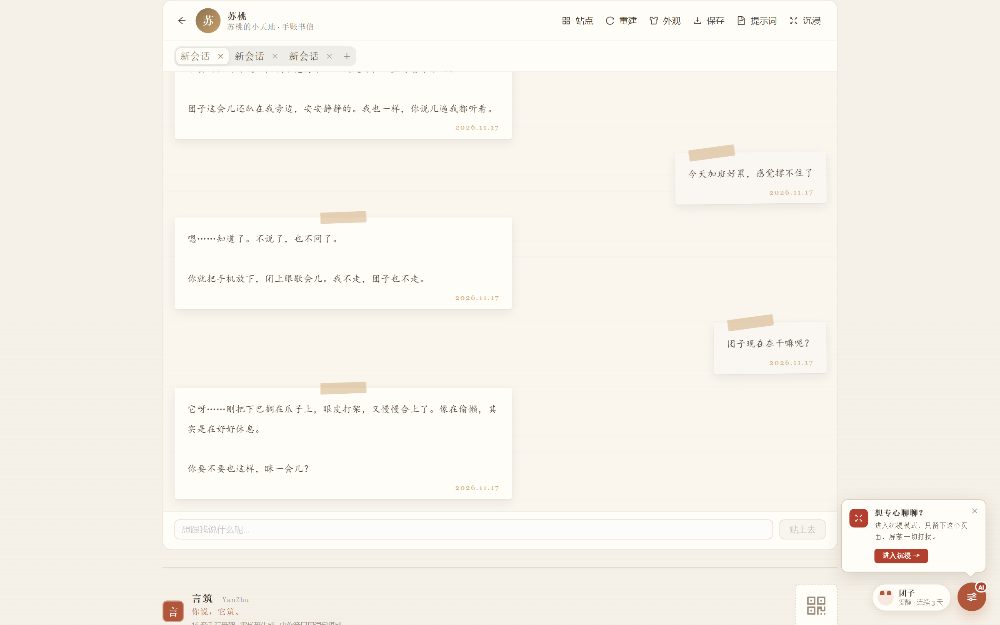
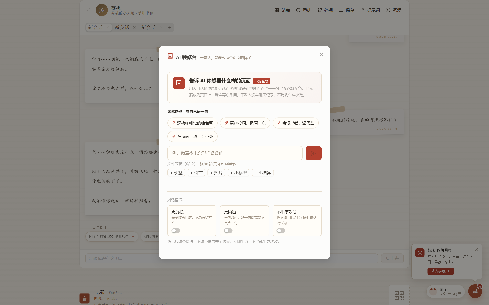
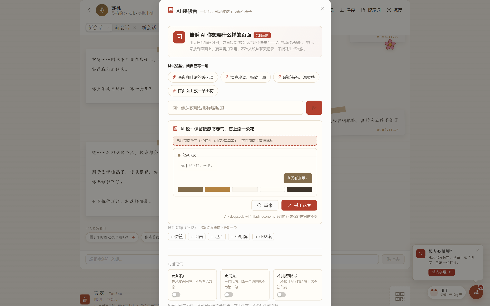
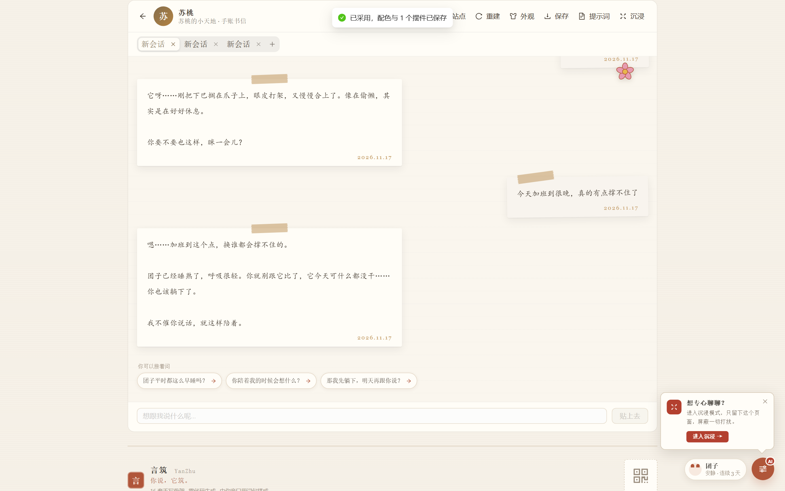
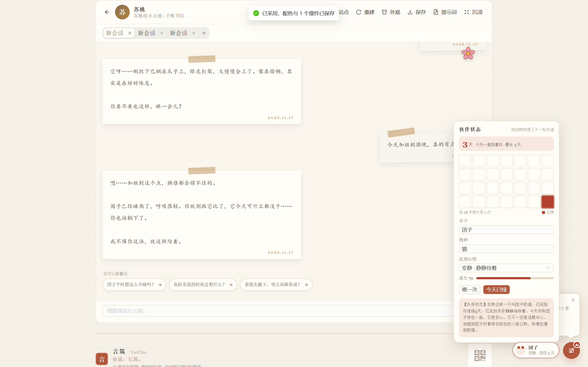
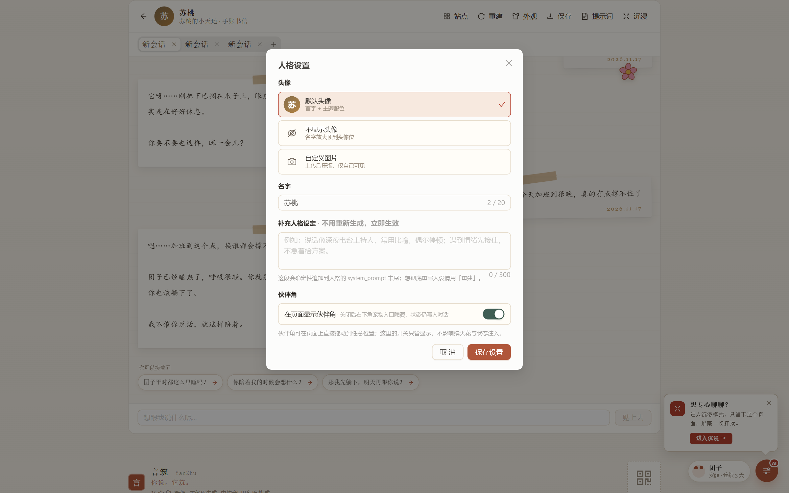